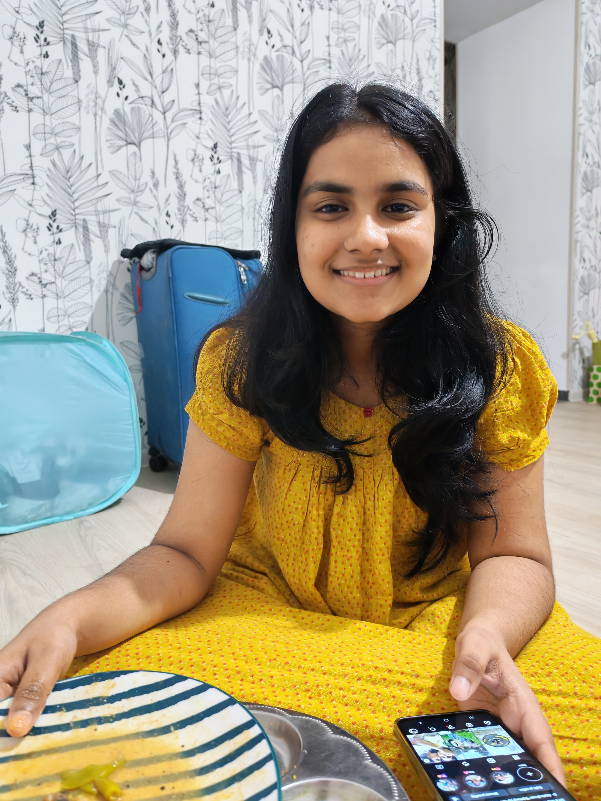
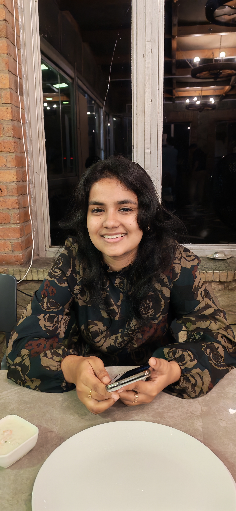

Through
My Eyes
For the girl who deserves to know how wonderfully she is seen. Today's little page is a reminder that someone out here thinks the world of you. 🌿
One obvious change in you, after we met?
Take your time, Alku. I want your answer before you see today's little surprise. 🥹
Somewhere in this song, there's us.
The butterfly of God's promises
A tiny butterfly has a promise to deliver. Tap it gently and watch its wings open. 🦋
Alkuuu... So today i just hope everything you prays for will be your answered prayers... I know you are struggling a lot, but genuinely i hope eeso ellam kandu will grant you the best life... for someone as pure and loving as you, deserves the best!
Some of my favourite yous.
The pictures and video are some of my favourite pictures of youu. Because how am I supposed to keep all this love to myself? 💚


Calculating my love… 🥹
One tiny experiment.
Let's see if the universe can measure it.
’Til I found her
A few lines that feel like a little Dilku-shaped feeling. 🌿
Leave me a little note?
Anything you want to tell me about today's page, tell me here. I want to hear it all.